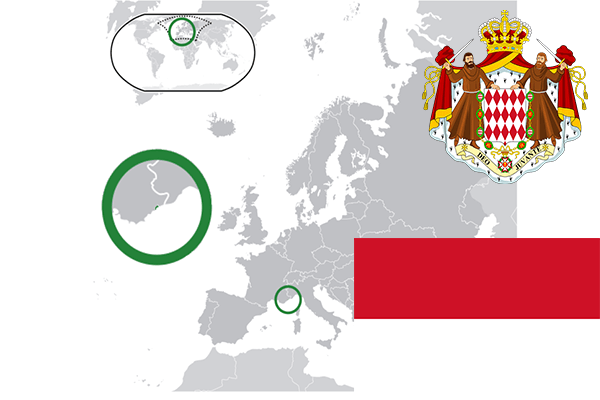

To`liq nomi: Monako Qirolligi
Region: G’arbiy Yevropa
Qonunchilik shakli: Konstitutsiyali Monarxiya
Mustaqillik kuni: -
Poytaxt: Monako
Maydoni: 1.95 km²
Chegaradosh davlatlari: Fransiya
Aholisi: 37 863 (2016)
Aholi zichligi: 18 679/km2
Aholining o`rtacha yoshi: 79,96
Rasmiy tili: Fransuz
Dini: Xristian
Pul birligi: yevro
Telefon prefiksi: +377
Internet domen: .mc
Xalqaro tashkilotlarga a`zoligi: BMT (1993-yil), Interpol, UNESCO
Dengiz va okeanlarga chiqishi: O’rta Yer Dengizi
YIM: Butun: $ 6,1 mlrd. Jon boshiga: $ 169 694
Yirik shaharlari: Monako